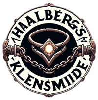
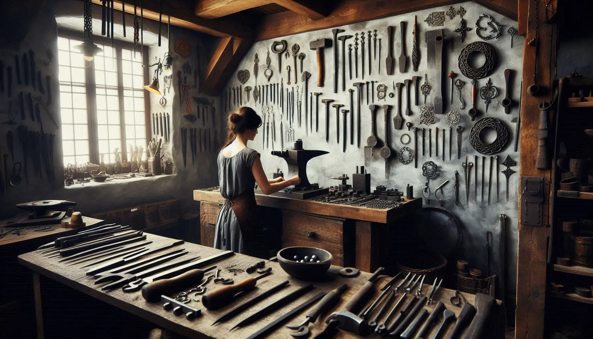

Birgittas Klensmiden verkstad
Hallbergs Klensmide är en liten hantverksmässig smedja där tradition möter modern design. Med skicklighet och passion skapar Birgitta unika smycken i silver och järn, inspirerade av naturens former och nordisk mytologi. Varje smycke bär en berättelse, smidd för hand med omsorg och precision. Perfekt för den som uppskattar genuint hantverk och tidlös skönhet.
Mitt namn är Birgitta Hallberg och jag har jobbat som Klensmide i 15 år. Denna passion växte fram mer och mer under åren men det började när jag var en liten flicka och mina föräldrar tog med mig till Medeltidsveckan på Gotland. Att få se dess smidda hantverk som har blivit skapade gjorde att jag senare varje år gick på Medeltidsvecka runt om i Sverige för att skapa inspiration så jag kunde senare börja med mina egna Klensmide projekt. Mina smidda smycken är skapade med glädje och passion vilket många av mina kunder ser när de kommer.